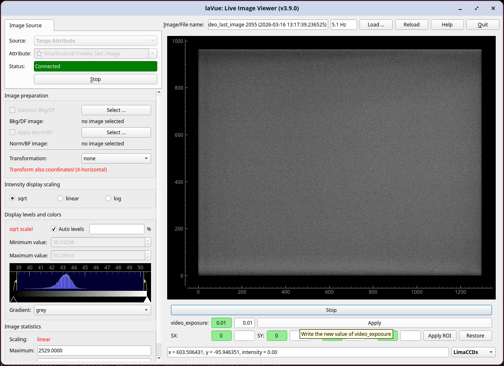

LimaCCDs Tool¶
LimaCCDs Tool allows to control the video mode of a LimaCCDs-based detector: start/stop live acquisition and read/write video parameters such as exposure, gain and the video ROI. This requires that the lima plugin of the camera implements the ctVideo interface.

Start/Stop: toggles the
video_liveattribute on the LimaCCDs TANGO device to start or stop continuous video acquisitionvideo_exposure: reads the current exposure time from the green widget and writes a new value via the white edit widget and the Apply button
video_gain: reads the current gain from the green widget and writes a new value via the white edit widget and the Apply button
ROI (SX, SY, LX, LY): reads and writes the
video_roispectrum attribute (start-x, start-y, length-x, length-y); the Apply ROI button writes the four values to the device and the Restore button resets the ROI to[0, 0, 0, 0]
The scalar attributes displayed (video_exposure, video_gain) are probed at activation time; only attributes that are both present and writable on the connected device are shown.
The device name is auto-detected from the active TANGO Attribute image source when the tool is activated. It can also be set explicitly via the tool configuration.
The configuration of the tool can be set with a JSON dictionary passed in the --tool-configuration option in command line or a toolconfig variable of LavueController.LavueState with the following keys:
limaccds_device (string) - the TANGO device name of the LimaCCDs server (e.g. "id00/limaccds/detector")
e.g.
lavue -u limaccds -s tangoattr --tool-configuration \{\"limaccds_device\":\"id00/limaccds/detector\"\} --start